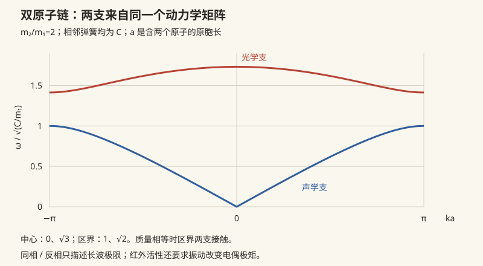

固体 I · 晶格与声子
对标：Kittel §1–5 ｜ 前置：mech-04（简正模——本页是它的无穷版）、sm-03（Bose 统计） 固体物理的第一课：周期性。晶格的语言（布拉伐格子、倒格子、布里渊区）+ 晶格振动的量子（声子）。方法论主线一句话：周期结构的一切问题都搬到倒空间（Fourier 空间）解——固体物理是 Fourier 分析的重度产业用户。
1. 晶格语言速成
布拉伐格子：\(\mathbf R = n_1\mathbf a_1 + n_2\mathbf a_2 + n_3\mathbf a_3\)（平移不变的点阵）+ 基元（每格点上的原子组）= 晶体结构。三维 14 种布拉伐格子【引用】；常客：简单立方、体心（bcc）、面心（fcc——最密堆积之一）、金刚石结构（fcc + 双原子基元——硅的家）。
倒格子：\(\mathbf b_i\) 满足 \(\mathbf a_i\cdot\mathbf b_j = 2\pi\delta_{ij}\)——晶格的 Fourier 对偶（周期函数只含倒格矢频率分量：数分 IV Fourier 级数的三维版）。布里渊区：倒空间的"元胞"（Wigner–Seitz 式取法）——所有波动问题的舞台（§2 与 solid-02 的 \(k\) 都住在这里）。
X 射线衍射：Bragg 条件 \(2d\sin\theta = n\lambda\) ⟺ von Laue 条件"动量转移 = 倒格矢"（衍射图样直接拍摄倒格子——opt-01"远场 = Fourier 变换"的晶体版：晶体学就是三维傅里叶光学；DNA 双螺旋的照片 51 号是它的名场面）。
2. 晶格振动：从弹簧链到色散关系

一维单原子链【推导】：近邻弹簧模型 \(m\ddot u_n = C(u_{n+1} + u_{n-1} - 2u_n)\)，试解 \(u_n = e^{i(kna - \omega t)}\)（周期结构的 Bloch 式猜解——solid-02 的预演）：
色散关系读法：长波 \(\omega \approx v_sk\)（线性——声波，\(v_s = a\sqrt{C/m}\)：固体的声速是弹簧常数的宏观回声）；区界 \(k = \pm\frac\pi a\) 处群速为零（驻波——Bragg 反射自锁）；\(k\) 只在第一布里渊区有意义（\(k\) 与 \(k + \frac{2\pi}{a}\) 描述同一格点运动——离散采样的混叠，数值/信号的 Nyquist 同源）。
双原子链【骨架】：两支解——声学支（长波齐动 = 声音）与光学支（原胞内反相振动，\(\omega\) 有隙、可与光耦合——红外吸收的来源；名字的出处）。三维：\(3p\) 支（\(p\) = 基元原子数），3 支声学 + 其余光学。
3. 声子：振动的量子
每个简正模是一个谐振子（mech-04 → qm-02 流水线）⇒ 能量量子化 \(\hbar\omega_k\)——声子：晶格振动的粒子化身（玻色子，数不守恒，\(\mu = 0\)——与光子同族）。
Debye 比热【推导骨架】：声子气按 Planck 同款处理（sm-03），线性色散 + 模式总数截断（Debye 频率 \(\omega_D\)——自由度守恒定截断）：
——低温 \(T^3\) 律（实验金标准）与高温 Dulong–Petit 一网收；\(\Theta_D\)（Debye 温度）= 晶格的"量子/经典分界线"（金刚石 2200 K——室温下"量子固体"，比热远低于经典值；铅 105 K——室温已经典）。
声子的工作清单：热传导（声子气的输运——绝缘体导热靠它；边界/缺陷散射解释纳米材料导热差）；电阻的温度依赖（电子被声子散射——solid-02）；超导配对的媒人（电子-声子耦合——cm-02 BCS 的红娘）；中子散射测色散（直接给 \(\omega(k)\) 曲线——实验与 §2 公式对表）。
4. 练习与要点
例 1（倒格子亲算） 二维正方格 \(a\)：倒格子也是正方格、边长 \(\frac{2\pi}{a}\)；fcc 的倒格子是 bcc（互为对偶——【引用】验证）——"实空间越密、倒空间越疏"的 Fourier 直觉。
例 2（色散关系读图） 一维链 \(C, m\) 给定：区界频率 \(\omega_{\max} = 2\sqrt{C/m}\) ~ THz 量级（原子弹簧的固有节拍）——固体的红外/拉曼光谱窗口由此设定。
例 3（Debye 数量级） 铜 \(\Theta_D \approx 343\) K：室温比热已近 \(3Nk_B\)（经典）✓；10 K 时 \(C \propto T^3\) 掉四个量级——低温物理实验"样品一冷比热消失"的日常，也是稀释制冷机能把 mK 级样品"冻透"的原因。\(\blacksquare\)
下一页：把电子放进周期势——Bloch 定理与能带：导体/绝缘体/半导体的三分天下，以及晶体管为什么可能。